todos nuestros productos incluyen guia de uso y beneficios
DESPACHO A DOMICILIO GRATIS
NUESTROS PRODUCTOS
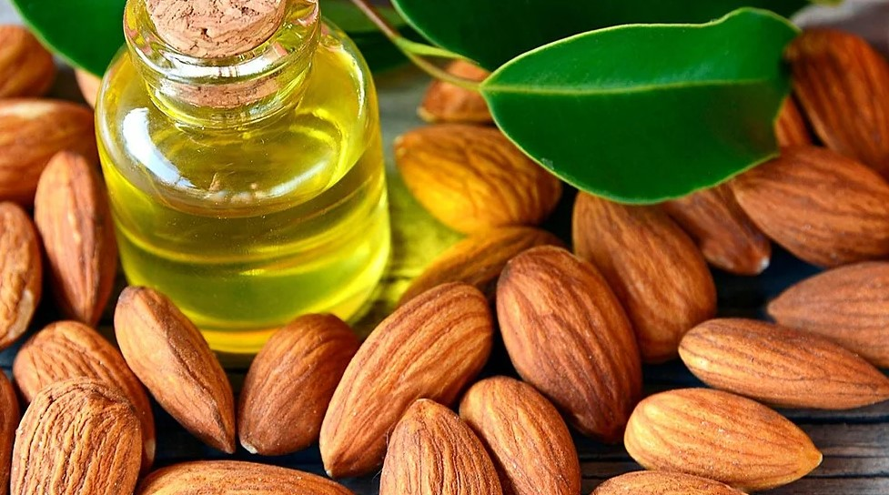
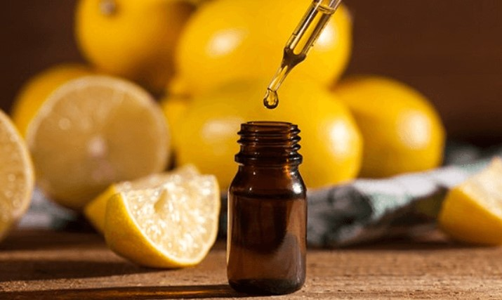
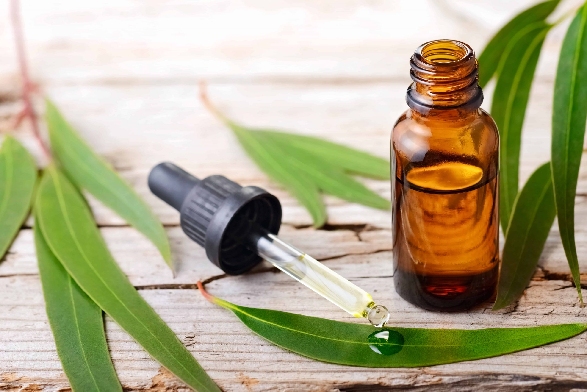
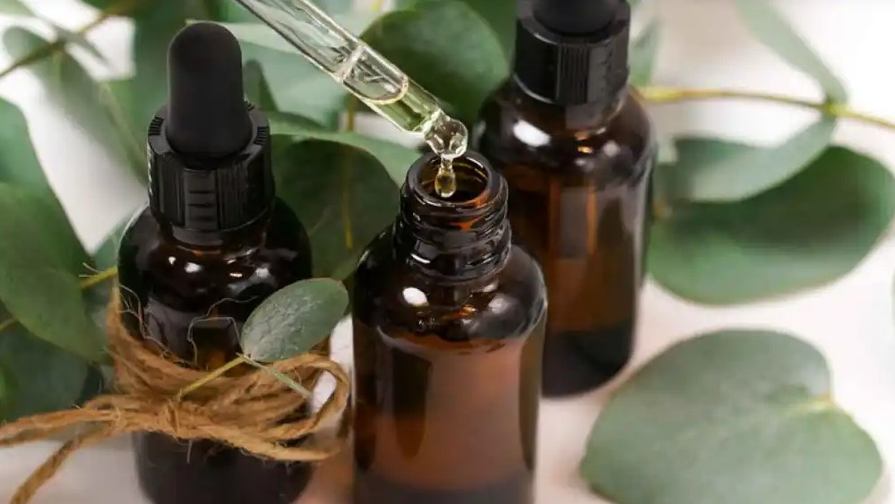
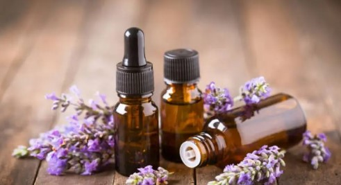
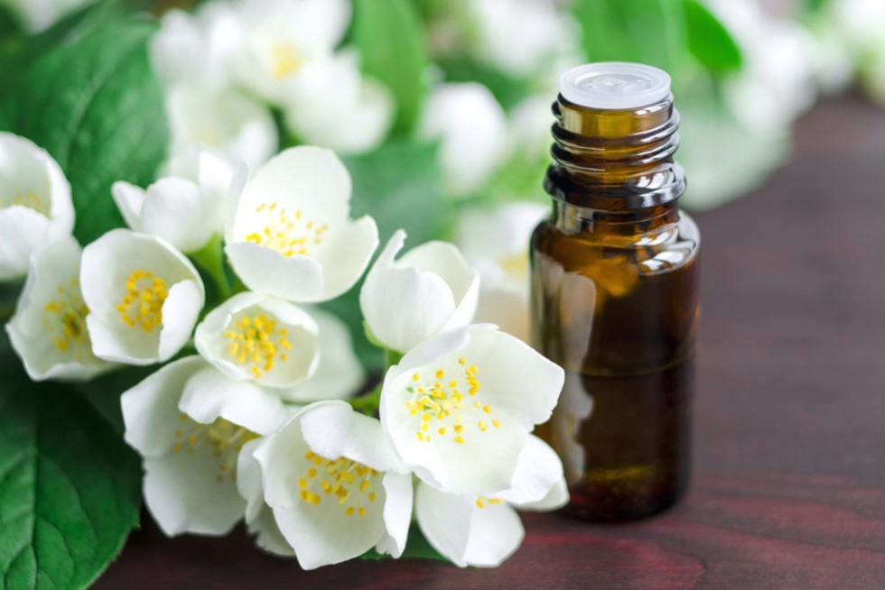
ESCOGE TU ARTICULO
1 - Aceite de Lavanda
El aceite de lavanda es conocido por sus efectos calmantes y relajantes, y se utiliza a menudo para aliviar el estrés y la ansiedad.
tiene propiedades analgésicas y se utiliza a menudo para aliviar el dolor muscular y articular, así como el dolor de cabeza.
tiene propiedades antiinflamatorias y se utiliza a menudo para aliviar la inflamación y la hinchazón.
tiene propiedades antiespasmódicas y se utiliza a menudo para aliviar los espasmos musculares y calambres.
tiene propiedades antimicrobianas y se utiliza a menudo para tratar infecciones y heridas.
es conocida por sus propiedades cicatrizantes y se utiliza a menudo para tratar quemaduras, cortes y otras heridas.
2 - Aceite del arbol del Té
El árbol del té contiene compuestos antibacterianos que pueden ayudar a combatir infecciones bacterianas en la piel, las uñas y el cabello.
también tiene propiedades antifúngicas que pueden ayudar a tratar infecciones fúngicas como el pie de atleta, la candidiasis y la tiña.
y antiinflamatorios que pueden ayudar a reducir la inflamación
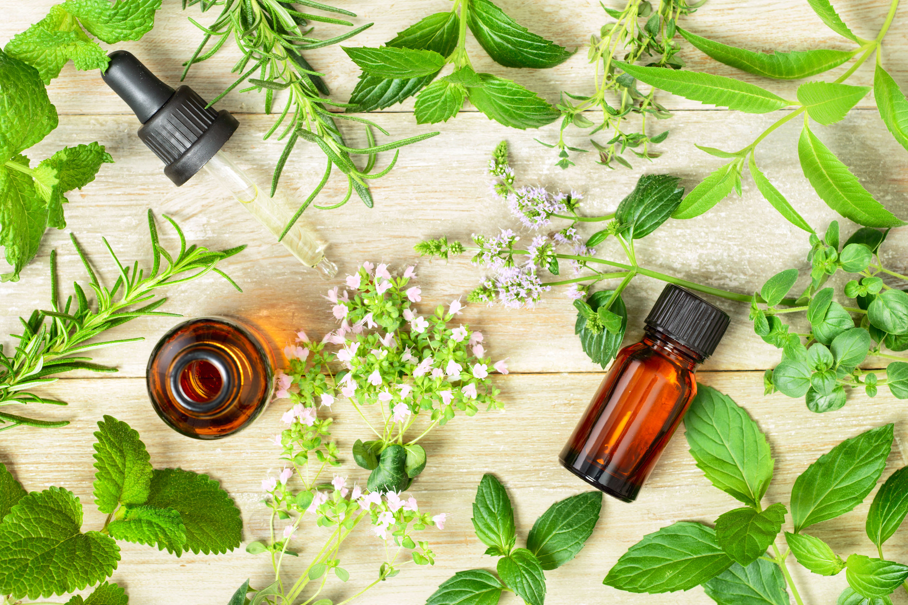
3 - Aceite de menta
puede aliviar el dolor muscular y articular, así como los dolores de cabeza y la migraña.
puede reducir la inflamación y la hinchazón, lo que puede ayudar a tratar afecciones como la artritis y la tendinitis.puede aliviar la congestión nasal y la tos, ayudando a aflojar la mucosidad y facilitando la respiración.puede relajar los músculos lisos del tracto gastrointestinal
4 - Aceite de Eucaliptus
el aceite de eucalipto tiene propiedades antiinflamatorias que pueden ayudar a reducir la inflamación y el dolor en el cuerpo.
tiene propiedades antibacterianas que pueden ayudar a combatir infecciones bacterianas en el cuerpo.
también tiene propiedades antivirales que pueden ayudar a combatir infecciones virales en el cuerpo.
puede ayudar a aflojar la mucosidad en los pulmones y las vías respiratorias, lo que puede facilitar la respiración y aliviar la congestión.
tiene propiedades analgésicas que pueden ayudar a aliviar el dolor muscular y articular.
puede ayudar a estimular la mente y el cuerpo, aumentando la energía y la concentración.
también tiene propiedades relajantes que pueden ayudar a reducir el estrés y la ansiedad.
5 - Aceite de Limón
el aceite de limón contiene antioxidantes que pueden ayudar a proteger el cuerpo de los daños causados por los radicales libres.
tiene propiedades antimicrobianas que pueden ayudar a combatir bacterias, virus y hongos en el cuerpo.
tiene propiedades antiinflamatorias que pueden ayudar a reducir la inflamación y el dolor en el cuerpo.
tiene propiedades astringentes que pueden ayudar a reducir el exceso de grasa en la piel y mejorar su apariencia.
puede ayudar a estimular la mente y el cuerpo, aumentando la energía y la concentración.
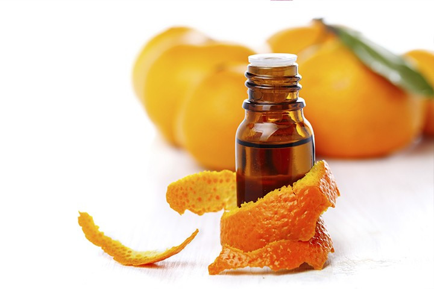
6 - Aceite de Naranja
el aceite de naranja tiene propiedades calmantes que pueden ayudar a reducir el estrés, la ansiedad y la depresión.
tiene propiedades antiinflamatorias que pueden ayudar a reducir la inflamación y el dolor en el cuerpo.
puede ayudar a estimular el sistema digestivo y mejorar la digestión.
tiene propiedades antiespasmódicas que pueden ayudar a reducir los calambres y los espasmos musculares.
tiene propiedades desinfectantes que pueden ayudar a combatir bacterias y virus en el cuerpo.
puede ayudar a estimular la producción de orina y mejorar la eliminación de líquidos en el cuerpo.
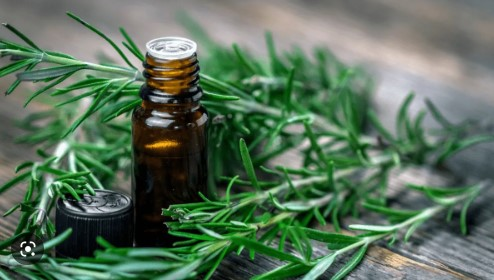
8 - Aceite de Romero
el aceite de romero se ha utilizado tradicionalmente para aliviar el dolor muscular y articular, así como para reducir la inflamación.
contiene antioxidantes que ayudan a proteger las células del cuerpo contra el daño causado por los radicales libres.
se ha utilizado para mejorar la circulación sanguínea y estimular el sistema nervioso, lo que puede ayudar a mejorar la concentración y el estado de ánimo.
tiene propiedades antimicrobianas y se ha utilizado para tratar infecciones de la piel y del tracto respiratorio.
algunos estudios sugieren que el aceite de romero puede tener propiedades antivirales y puede ser útil en el tratamiento de infecciones virales.
se ha utilizado para aliviar los síntomas de la indigestión y para estimular la digestión.
9 - Aceite de Almendras
el aceite de almendras es un emoliente natural que ayuda a mantener la piel hidratada y suave, y puede ser beneficioso para personas con piel seca o sensible.
contiene antioxidantes como la vitamina E, que ayuda a proteger la piel del daño causado por los radicales libres.
puede reducir la inflamación en la piel y el cuero cabelludo, lo que lo convierte en un ingrediente útil en el tratamiento de la dermatitis y otras afecciones de la piel.
se absorbe fácilmente en la piel y el cabello, lo que lo hace útil para suavizar y fortalecer el cabello, así como para reducir la apariencia de arrugas y líneas finas.
se ha utilizado para acelerar la cicatrización de heridas y quemaduras leves.
es rico en ácidos grasos esenciales y proteínas, lo que lo convierte en un ingrediente útil para el cuidado de la piel y el cabello.
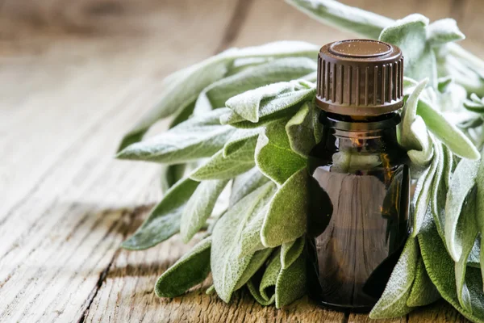
10 - Aceite de Salvia
El aceite de salvia puede reducir la inflamación en el cuerpo y puede ser útil para el tratamiento de afecciones inflamatorias como la artritis.
es rico en antioxidantes que pueden ayudar a proteger las células del cuerpo del daño oxidativo.
tiene propiedades antimicrobianas que pueden ayudar a combatir infecciones bacterianas y fúngicas.
puede ayudar a aliviar los espasmos musculares y puede ser útil para el tratamiento de afecciones como el síndrome del intestino irritable.
puede estimular la circulación sanguínea y puede ser beneficioso para personas con mala circulación.
tiene propiedades relajantes y puede ser beneficioso para aliviar el estrés y la ansiedad.
11 - Aceite de Jazmin
el aceite de jazmín puede ser beneficioso para aliviar el estrés y la ansiedad debido a sus propiedades calmantes y relajantes.
se ha utilizado tradicionalmente como un afrodisíaco natural para mejorar la libido y la función sexual.
puede ayudar a mejorar el estado de ánimo y reducir los síntomas de la depresión.
tiene propiedades antiinflamatorias que pueden ayudar a reducir la inflamación en el cuerpo.
rico en antioxidantes que pueden ayudar a proteger las células del cuerpo del daño oxidativo.
puede ayudar a promover la cicatrización de heridas y reducir la apariencia de cicatrices.
12 - Aceite de canela
el aceite de canela es rico en antioxidantes que pueden ayudar a proteger las células del cuerpo del daño oxidativo y reducir el riesgo de enfermedades crónicas.
puede reducir la inflamación en el cuerpo y puede ser útil para el tratamiento de afecciones inflamatorias como la artritis.
tiene propiedades antimicrobianas que pueden ayudar a combatir infecciones bacterianas y fúngicas.
puede ayudar a aliviar el dolor y puede ser útil para el tratamiento de dolores de cabeza y dolores musculares.
puede estimular la circulación sanguínea y puede ser beneficioso para personas con mala circulación.
puede ayudar a regular los niveles de azúcar en la sangre y puede ser beneficioso para personas con diabetes.
13 - Aceite de manzanilla
el aceite de manzanilla tiene propiedades antiinflamatorias que pueden ayudar a reducir la inflamación en el cuerpo.
puede ser beneficioso para aliviar el estrés y la ansiedad debido a sus propiedades calmantes y relajantes.
puede ayudar a promover la cicatrización de heridas y reducir la apariencia de cicatrices.
puede ayudar a mejorar la digestión y aliviar problemas digestivos como el dolor abdominal y la indigestión.
puede ayudar a promover el sueño y puede ser útil para personas que tienen dificultades para dormir.
puede ayudar a aliviar los espasmos musculares y puede ser útil para personas con dolores menstruales.
14 - Aceite de Rosas
el aceite de rosas tiene propiedades antiinflamatorias que pueden ayudar a reducir la inflamación en el cuerpo.
puede ser beneficioso para aliviar el estrés y la ansiedad debido a sus propiedades calmantes y relajantes.
puede ayudar a mejorar el estado de ánimo y puede ser útil para personas que padecen depresión.
puede ayudar a hidratar la piel y reducir la sequedad y la descamación.
puede ayudar a reducir la apariencia de arrugas y líneas finas debido a sus propiedades antioxidantes y estimulantes de la circulación.
puede ayudar a reducir la producción de sebo en la piel y puede ser útil para personas con piel grasa o propensa al acné.
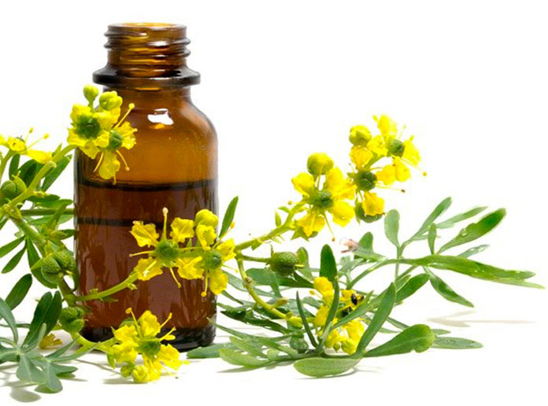
15 - Aceite de Ruda
El aceite de ruda puede ayudar a aliviar los espasmos musculares y puede ser útil para personas con dolores menstruales.
tiene propiedades antiinflamatorias que pueden ayudar a reducir la inflamación en el cuerpo.
puede ser útil como repelente de insectos y para eliminar piojos y pulgas.
puede ayudar a estimular la circulación sanguínea y puede ser útil para personas con problemas de circulación.
puede tener propiedades antivirales y puede ser útil para personas que padecen infecciones virales.
16 - Aceite de Orégano
El aceite esencial de orégano puede ser eficaz contra bacterias dañinas en el cuerpo, incluyendo la bacteria que causa la salmonella y la E. coli.
puede ser útil para combatir virus, incluyendo el virus del herpes.
puede ser útil para combatir hongos, incluyendo la candidiasis.
tiene propiedades antiinflamatorias que pueden ayudar a reducir la inflamación en el cuerpo.
es rico en antioxidantes que pueden ayudar a proteger el cuerpo contra el daño celular causado por los radicales libres.
17 - Aceite de Calendula
El aceite de caléndula tiene propiedades antiinflamatorias que pueden ayudar a reducir la inflamación en el cuerpo.
puede ayudar a acelerar la cicatrización de heridas y quemaduras leves, y puede ser útil para personas con piel sensible o propensa a las cicatrices.
puede ayudar a hidratar y suavizar la piel seca y agrietada.
puede ayudar a reducir la apariencia de arrugas y líneas finas debido a sus propiedades antioxidantes y estimulantes de la circulación.
puede ayudar a reducir la inflamación y el enrojecimiento asociados con el acné y puede ser útil para personas con piel propensa al acné.
puede tener propiedades antifúngicas y puede ser útil para personas con infecciones por hongos en la piel.
18 -
Aceite de Manzanas rojas
El aceite de manzana es rico en ácidos grasos esenciales y vitaminas que pueden ayudar a hidratar y suavizar la piel seca y agrietada.
es rico en antioxidantes naturales, como la vitamina C y los polifenoles, que pueden ayudar a proteger la piel de los daños causados por los radicales libres.
puede tener propiedades astringentes, lo que significa que puede ayudar a reducir la apariencia de poros dilatados y mejorar la textura de la piel.
contiene compuestos antiinflamatorios naturales, como los flavonoides, que pueden ayudar a reducir la inflamación en la piel y aliviar el enrojecimiento y la irritación.
puede ayudar a estimular la renovación celular y la regeneración de la piel, lo que puede ser beneficioso para personas con piel dañada o envejecida.
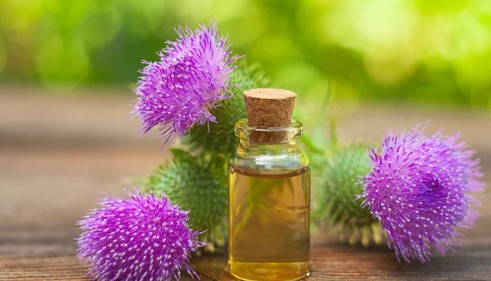
19 - Aceite de Cardo
!
El aceite de cardo mariano es un aceite vegetal que se extrae de las semillas de la planta del cardo mariano (Silybum marianum). Este aceite se ha utilizado durante siglos por sus propiedades medicinales y nutricionales. A continuación, se describen algunas de las propiedades atribuidas al aceite de cardo mariano:
Propiedades antiinflamatorias: El aceite de cardo mariano contiene compuestos antiinflamatorios que pueden ayudar a reducir la inflamación y el dolor en el cuerpo.
es conocido por sus propiedades hepatoprotectoras, lo que significa que puede ayudar a proteger y mejorar la salud del hígado.
contiene antioxidantes que pueden ayudar a proteger el cuerpo contra el daño celular causado por los radicales libres.
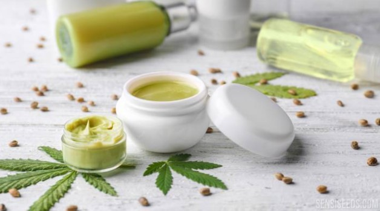
20 - Crema de CBD
Alivio del dolor: El CBD puede tener efectos analgésicos y antiinflamatorios, lo que puede ayudar a aliviar el dolor crónico, la artritis y otros trastornos dolorosos.
Reducción de la ansiedad: Se cree que el CBD puede reducir la ansiedad y la depresión al interactuar con los receptores de serotonina del cerebro.
Mejora del sueño: El CBD puede ayudar a mejorar la calidad del sueño y reducir el insomnio.
Reducción de los síntomas de epilepsia: Se ha demostrado que el CBD reduce la frecuencia y la gravedad de las convulsiones en personas con ciertos tipos de epilepsia.
Propiedades antiinflamatorias: El CBD puede tener propiedades antiinflamatorias que pueden ser útiles para tratar enfermedades inflamatorias como la enfermedad de Crohn y la artritis reumatoide.
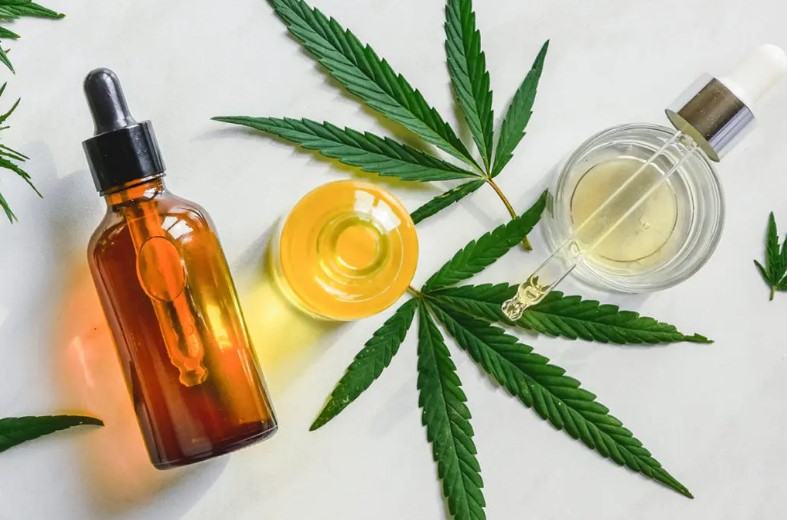
21 - Aceite CBD
Alivio del dolor: El CBD puede tener efectos analgésicos y antiinflamatorios, lo que puede ayudar a aliviar el dolor crónico, la artritis y otros trastornos dolorosos.
Reducción de la ansiedad: Se cree que el CBD puede reducir la ansiedad y la depresión al interactuar con los receptores de serotonina del cerebro.
Mejora del sueño: El CBD puede ayudar a mejorar la calidad del sueño y reducir el insomnio.
Reducción de los síntomas de epilepsia: Se ha demostrado que el CBD reduce la frecuencia y la gravedad de las convulsiones en personas con ciertos tipos de epilepsia.
Propiedades antiinflamatorias: El CBD puede tener propiedades antiinflamatorias que pueden ser útiles para tratar enfermedades inflamatorias como la enfermedad de Crohn y la artritis reumatoide.
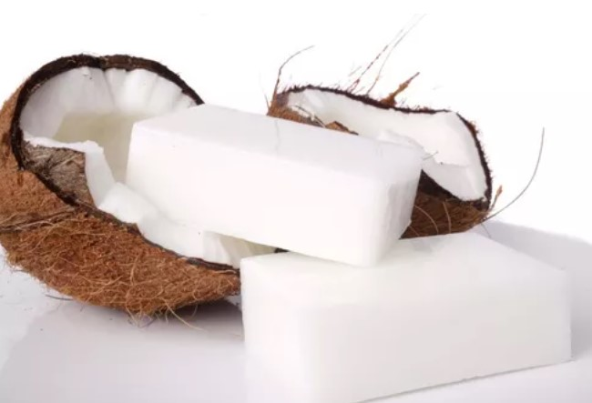
23 - Jabón de Coco
El aceite de coco contiene ácidos grasos saturados que pueden ayudar a mantener la piel hidratada y suave.
El ácido láurico presente en el aceite de coco tiene propiedades antibacterianas y puede ayudar a prevenir la propagación de bacterias en la piel.
El jabón de coco puede tener propiedades antiinflamatorias que pueden ayudar a reducir la inflamación de la piel.
contiene antioxidantes naturales que pueden ayudar a proteger la piel de los daños causados por los radicales libres.
es efectivo para la limpieza de la piel y el cabello, eliminando la suciedad y el exceso de aceites.
24 - Agua de Rosas
El agua de rosas es un líquido perfumado y refrescante que se obtiene por destilación de los pétalos de rosas. A continuación se presentan algunas de las propiedades atribuidas al agua de rosas:
Propiedades hidratantes: El agua de rosas puede ayudar a hidratar la piel, reduciendo la sequedad y la descamación.
Propiedades antioxidantes: El agua de rosas contiene antioxidantes naturales que pueden ayudar a proteger la piel de los daños causados por los radicales libres.
Propiedades antiinflamatorias: El agua de rosas puede tener propiedades antiinflamatorias que pueden ayudar a reducir la inflamación de la piel.
Propiedades astringentes: El agua de rosas puede ayudar a reducir el tamaño de los poros y a tonificar la piel, dejándola más firme y suave.
Propiedades relajantes: El agua de rosas puede ayudar a aliviar el estrés y la ansiedad, y se utiliza a menudo en aromaterapia para promover la relajación.
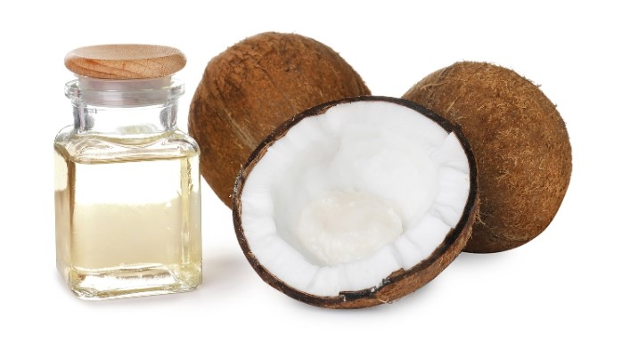
25 - Aceite de Coco
El aceite de coco contiene ácidos grasos saturados que pueden ayudar a mantener la piel hidratada y suave.
El ácido láurico presente en el aceite de coco tiene propiedades antibacterianas y puede ayudar a prevenir la propagación de bacterias en la piel.
puede tener propiedades antiinflamatorias que pueden ayudar a reducir la inflamación de la piel.
contiene antioxidantes naturales que pueden ayudar a proteger la piel de los daños causados por los radicales libres.
es efectivo para la limpieza de la piel y el cabello, eliminando la suciedad y el exceso de aceites
26 - Aceite de Curcuma
Propiedades antiinflamatorias: El aceite de cúrcuma contiene compuestos con propiedades antiinflamatorias, lo que puede ayudar a reducir la inflamación y el dolor en el cuerpo.
Propiedades antioxidantes: El aceite de cúrcuma contiene antioxidantes naturales que pueden ayudar a proteger el cuerpo de los daños causados por los radicales libres.
Propiedades antimicrobianas: El aceite de cúrcuma puede tener propiedades antimicrobianas que pueden ayudar a combatir las infecciones bacterianas y fúngicas.
Propiedades analgésicas: El aceite de cúrcuma puede tener propiedades analgésicas que pueden ayudar a aliviar el dolor y la inflamación.
Propiedades para la piel: El aceite de cúrcuma puede tener propiedades beneficiosas para la piel, como ayudar a reducir el acné, mejorar la textura de la piel y reducir las manchas oscuras.